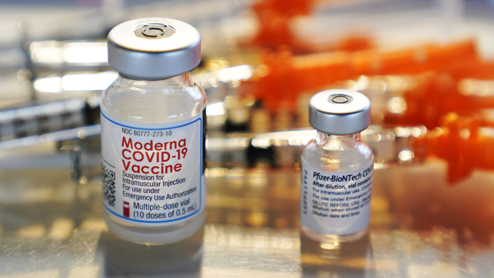

No, the death rate for vaccinated people is not higher than that of unvaccinated people
An Instagram post claimed that 'the death rate for fully vaccinated people is significantly higher than non-vaccinated (people).'
The post featured a screenshot of a tweet by Chuck Callesto, a former candidate for Florida’s 3rd congressional district.The tweet reads, 'Breaking report: according to the CDC 7,157 fully vaccinated Americans have contracted COVID-19, 88 have died.'It appears the post has since been deleted from Callesto’s Twitter.
We’ve fact-checked several other claims about the purported effects of the COVID-19 vaccines and their effectiveness before, and we found them to be false.
The numbers in the post come from actual figures provided by the Centers for Disease Control and Prevention.In fact, the CDC’s most recent data on breakthrough cases shows that, as of April 26, more than 9,000 COVID-19 breakthrough infections have been reported.
However, these breakthrough infections are not evidence that vaccines are dangerous and ineffective.Public health experts agreed that the author likely miscalculated the rate.Furthermore, they said that it’s misleading to use these figures to calculate a death rate and compare it to the unvaccinated population.
Facebook flagged this story as part of its efforts to combat false news and misinformation on its News Feed.(Read more about PolitiFact California’s partnership with Facebook.)It had been shared more than 42,800 times when we first saw this post on April 30.The post no longer appears on the author’s Instagram page, which has been flagged multiple times by Facebook for posting misleading and false information.
COVID-19 vaccines are effective.However, a small percentage of people who are fully vaccinated will still get COVID-19 if they are exposed to the virus that causes it, according to the CDC.These infections are defined as 'vaccine breakthrough cases.'
Vaccine breakthrough cases only occur in a small percentage of vaccinated people.And public health officials say that these cases actually reinforce the effectiveness of the vaccines, unlike the post suggests.
As of May 4, more than 105 million people in the United States have been fully vaccinated against COVID-19, according to the CDC.During this same time, the CDC received 9,245 reports of vaccine breakthrough infections.That’s less than .01% of fully vaccinated Americans.
Vaccine breakthrough cases are expected.In the original clinical trials, none of the vaccines were 100% effective, nor have they ever claimed to be.No vaccine is 100% effective at preventing illness, according to public health experts and the CDC.
So the vaccines are actually performing better in real-life situations than expected in some regards, according to the public health experts we interviewed.
The CDC has acknowledged that these cases actually represent an undercount of the actual number of breakthrough vaccine infections.Since the surveillance system relies on voluntary reporting and testing, the total number of breakthrough infections is likely higher.
'Not all real-world breakthrough cases will be identified because of lack of testing,' the CDC’s website reads.'This is particularly true in instances of asymptomatic or mild illness.'That means that the CDC’s data on breakthrough cases is skewed towards more severe infections that result in hospitalization or death.
But it’s worth acknowledging that more than a quarter of these cases were reported as asymptomatic, meaning that vaccinated individuals were 'infected with SARS-CoV-2 but never showed symptoms of the disease,' according to the CDC.
Going forward, the CDC will be 'transitioning to reporting only patients with COVID-19 vaccine breakthrough infection that were hospitalized or died to help maximize the quality of the data collected on cases of greatest clinical and public health importance,' according to their website.That change in reporting will begin on May 14.
Breakthrough infections have resulted in 835 hospitalizations and 132 deaths, according to the latest figures from CDC.The CDC’s website notes that 20 of the 132 fatal cases were 'reported as asymptomatic or not related to COVID-19.'That means that less than 1% of these breakthrough infections resulted in the patient dying because of COVID-19 related illness.
New data from the CDC found that fully vaccinated adults 65 or older are 94% less likely to be hospitalized with COVID-19 than their non-vaccinated peers — and 64% less likely if they have only received one shot of the Pfizer or Moderna vaccine.
According to the latest figures from the CDC on May 10, there have been 32,543,257 reported cases of COVID in the U.S., of which 578,945 people have died.That’s a rate of 1.8% — a higher rate compared to the data we have on breakthrough infections.
However, the post claims that the death rate for vaccinated people is greater than the death rate for unvaccinated people, a number that experts say is difficult to quantify.
Public health experts said that Smith likely miscalculated the death rate.
'What they’re saying is completely wrong,' said Dr.Lee Riley, a professor and chair of the Division of Infectious Disease and Vaccinology at UC Berkeley.'I think they’re just miscalculating.'
Erin Mordecai, an assistant professor of biology at Stanford University, agreed with Riley about the miscalculation, and cautioned against the comparison.
She said it’s impossible to accurately calculate a death rate for each group — vaccinated versus vaccinated — because demographics skew the data.
'Those breakthrough cases may not be an average subset of the population, they may be a more at risk group that’s more likely to have severe disease anyway,' Mordecai said.'To better understand what’s going on with the relative risk, you would need to know the demographics of the underlying health conditions of the people who experienced those breakthrough cases and deaths.'
For example, throughout the country the people most at risk were prioritized in vaccination, including by age.That means that the vaccinated population skews much older than the unvaccinated population, with adults ages 65 and older making up more than 30% of the vaccinated population.
We already know that older adults are at a greater risk of requiring hospitalization or dying after being infected with the virus that causes COVID-19, so it’s not surprising that most of these breakout deaths (45%) were among those ages 60 and older.
An Instagram post deceptively uses CDC data on vaccine breakthrough infections to claim that 'the death rate for fully vaccinated people is significantly higher than non-vaccinated (people).'
That’s not the case.Public health experts agree that this claim is false and that the author of the post likely miscalculated the death rates of vaccinated and unvaccinated people.
The experts we talked to also said that it’s misleading to use these figures to calculate a death rate and compare it to the unvaccinated population.The vaccinated population skews much older than the unvaccinated population and are more likely to have underlying health conditions due to vaccination roll-out restrictions.
The post also includes a screenshot of a tweet to claim that 'the CDC has reported 7,157 fully vaccinated Americans have contracted COVID-19, 88 have died.'
The figures on breakthrough infections are real — in fact, there are now more than 9,000 recorded cases, which have resulted in 132 deaths.But it is widely misleading to use these numbers as evidence that vaccines are dangerous and ineffective, and the post leaves out crucial facts about breakthrough infections.
We rate this statement as False.
This article was originally published by PolitiFact, which is part of the Poynter Institute.It is republished here with permission.See the sources for these fact checks here and more of their fact checks here.
Tags: Coronavirus, PolitiFact
Posted On: 2021-05-11T00:00:00
Posted By: Isabella Fertel

Content Date: 2021-05-11
Download Date: 2021-09-16
Document ID: L0C04G61W